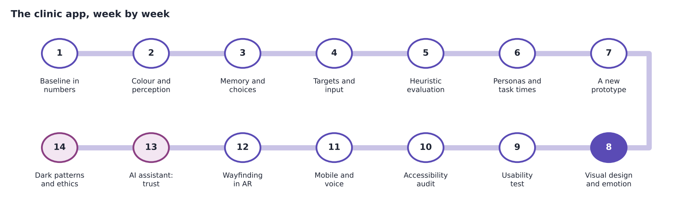
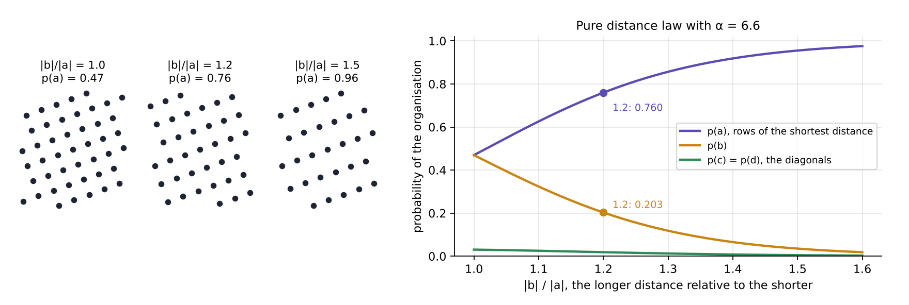
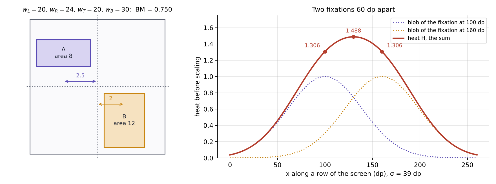
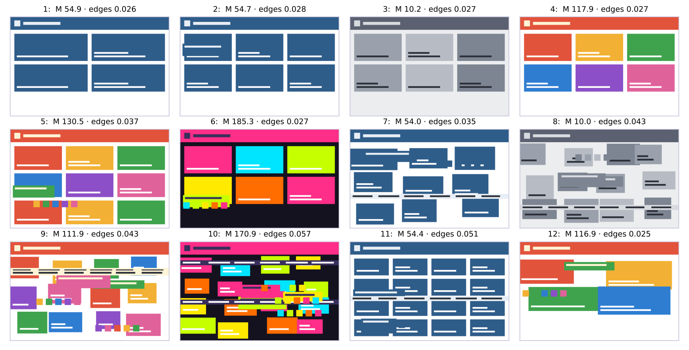
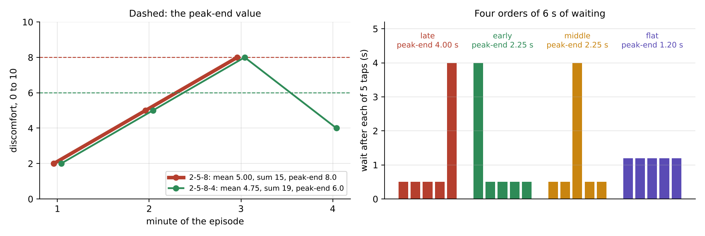
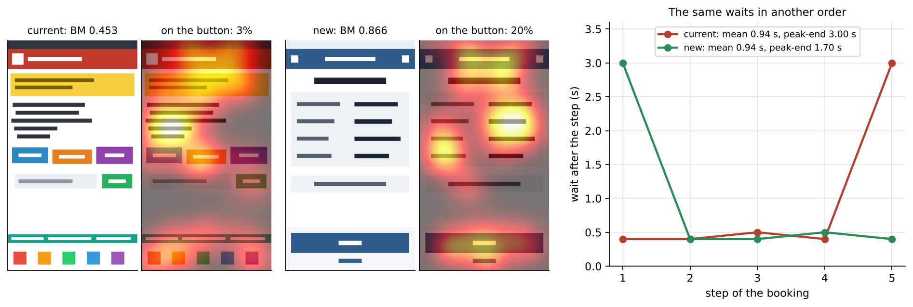

Overview
Weeks 1 to 7 measured the clinic app, described its patients and built a prototype of the new booking flow. This week gives the prototype its visual design and asks how screens make people feel. It starts with the Gestalt principles, which explain why some elements look like a group. Layout measures turn balance and alignment into numbers, and heat maps show where the eyes rest. First impressions form within a fraction of a second and can be predicted in part from the pixels of a design. Emotion closes the content: How beauty relates to usability, and why people remember an experience by its worst moment and its end. The clinic app reaches stage 8, redesigned screens with a clear visual hierarchy. The Python step treats images as arrays, and the week closes with the question whether artificial intelligence (AI) can read feelings from faces.
Week at a glance
flowchart LR A["Gestalt: How the eye groups"] --> B["Layout and heat maps"] B --> C["First impressions"] C --> D["Emotion and memory"] D --> E["Interface clinic"] E --> F["The human side"] F --> S["The clinic app, stage 8"] S --> H["Toward human-AI interaction"]
Every method on this page is also written as Python code in the Colab notebook of the week. Its code is divided into numbered sections. Each orange box on this page names the section whose code carries out what the text above the box explains. The box says what to run and what to look at in that section, and its button opens the Colab notebook at that place. The games, the practice parts and the self-assessment of the week are in the interactive lab. Each violet box opens one part of the interactive lab. The part ends with a link back to its box on this page, and the Colab notebook is always opened from the orange boxes here.
Python step 8: Images as arrays
Python code in the Colab notebook, right after Section 0 (setup). Open the Colab notebook and run this step cell by cell: It consists of short pieces of Python code with their explanations, a quick check and three exercises. Topics: An image is an array of numbers · Colour channels and masks · Drawing rectangles into an image · Statistics of an image.
The step continues with Python and NumPy [1, 2]. A screen is a grid of coloured points, and NumPy stores such a grid as an array with rows, columns and three colour channels. The step draws small screens from rectangles, selects colours with masks and computes statistics of the pixels, the basis of the measures of this week. Students who have never programmed start with the start-here notebook of the course.
Weeks 1 to 6 measured the booking flow, fitted it to human abilities and described three personas. Week 7 built a prototype with five categories of departments and checked it as a state machine.
This week gives the prototype its visual design. Stage 8 compares the summary screen of the current app with the redesign and moves a long wait away from the end of a booking.

Gestalt: How the eye groups
Gestalt psychology studied how the eye organises parts into wholes, and a century of research has confirmed and refined its principles [3]. Elements that are close together look like a group (proximity), and so do elements that look alike (similarity). Elements inside one frame or on one background form a group as well (common region), and lines that continue smoothly are seen as one (good continuation). A screen uses these principles whether its designer plans them or not.
Kubovy, Holcombe and Wagemans measured grouping by proximity with dot lattices [4]. A lattice appears for 300 ms, and observers report the direction in which they see rows of dots. The shortest distance between dots is \(|a|\), the next one \(|b|\), and the diagonals are \(|c|\) and \(|d|\). The relative pull of each direction falls exponentially with its relative distance:
\(p(v)\) is the probability of seeing rows along the direction \(v\), and \(\alpha\) is the attraction constant. The pull depends only on the ratio of the distances, not on the shape of the lattice, so the authors called the rule the pure distance law. For their observers, a slope of about 6.6 was representative [4].
A worked example. In a rectangular lattice with \(|b|/|a| = 1.2\), the pull of \(b\) is \(f(b) \)\({}= e^{-6.6 \times 0.2} \)\({}= e^{-1.32} \)\({}= 0.267\). Both diagonals have the relative length \(\sqrt{1 + 1.2^2} = 1.562\), so \(f(c) \)\({}= f(d) \)\({}= e^{-6.6 \times 0.562} \)\({}= 0.0245\). Then \(p(a) \)\({}= 1/(1 + 0.267 + 2 \times 0.0245) \)\({}= 0.760\) and \(p(b) = 0.267 \times 0.760 = 0.203\). A distance that is 20 percent longer already makes three of four observers see the rows of the shorter distance. At 50 percent longer, the share reaches 0.955.
Animation. A rectangular dot lattice for the chosen ratio of the distances, with the four directions \(a\), \(b\), \(c\) and \(d\). The sliders set the ratio \(|b|/|a|\) and the attraction constant \(\alpha\), and the right panel shows the probabilities of the organisations for all ratios. Flash shows the lattice for 300 ms and then a mask, as in the experiments.
For a screen, the law means that spacing alone decides much of what belongs together. A label should sit clearly closer to its own field than to the next one. The gap between two groups of buttons should be clearly larger than the gaps inside a group. Spacing that is almost equal leaves the grouping to chance, as the lattice with \(|b|/|a| = 1.0\) does.

Check your understanding. In a rectangular lattice, \(|b|/|a| = 1.0\). Which statement holds?
Part A of the interactive lab projects such lattices onto the floor of the new waiting area. You report the rows that you see, and the Colab notebook fits your own attraction constant.
Interactive lab, Part A. Floor dots in 3D: Thirty lattices flashed for 300 ms on the floor of the waiting area, with ratios from 1.0 to 1.4. The results can be copied into the Colab notebook.
Python code in the Colab notebook, Section 1. Open Section 1 of the Colab notebook and run it. The functions attraction and lattice_probs carry out the formulas of this section and print the probabilities for each ratio. Paste the results of Part A into MY_LATTICE, and the code fits your attraction constant from the log odds. A figure compares your choices with the pure distance law.
- Find a form in an app where a label sits as close to the field above as to its own field. How did you know which field it belonged to?
- Which principle would you use to group the buttons of a dialog: Proximity, a common background or a common colour?
Layout: Balance, alignment and where the eye lands
Ngo, Teo and Byrne proposed fourteen measures that compute the aesthetics of a screen layout from its elements [5]. Their balance measure \(BM\) compares the visual weight on the two sides of the central lines. Each element contributes its area times its distance from a central line, and it belongs to the side of its centre:
\(w_L\), \(w_R\), \(w_T\) and \(w_B\) are the weights of the left, right, top and bottom sides, and \(BM_{horizontal}\) compares \(w_T\) with \(w_B\) in the same way. Here, \(a_{ij}\) is the area of element \(i\) on side \(j\), and \(d_{ij}\) is the distance between its central line and that of the frame. The measure runs from 0 to 1, and 1 means perfect balance.
→ This formula with numbers, step by step: Lab Part B, calculator, steps 1 to 5.
A worked example. A frame of 10 by 10 units holds a text block A of 4 by 2 units, centred at (2.5, 2.5). An image B of 3 by 4 units is centred at (7, 7.5). Left and right of the line \(x = 5\), \(w_L = 8 \times 2.5 = 20\) and \(w_R = 12 \times 2 = 24\). So \(BM_{vertical} = (20 - 24)/24 = -0.167\). Above and below \(y = 5\), \(w_T = 8 \times 2.5 = 20\) and \(w_B = 12 \times 2.5 = 30\). So \(BM_{horizontal} \)\({}= (20 - 30)/30 \)\({}= -0.333\), and \(BM = 1 - (0.167 + 0.333)/2 = 0.750\).
The same measures count alignment points: Fewer distinct edges for the same number of elements make a layout simpler and more ordered [5]. The Colab notebook counts the distinct left edges and top edges of each screen. A measure is a model, too: Balance rewards symmetry, so a column of left-aligned text lowers it even when the layout reads well.
Eye tracking records where people look. A heat map turns the fixations of many viewers into a smooth surface: Each fixation adds a Gaussian blob, and the sum shows where the eyes rested [6]:
\((x_k, y_k)\) is fixation \(k\), and \(\sigma\) sets the width of a blob. Le Meur and Baccino describe a width of about one degree of visual angle, close to the size of the fovea, the region of sharp vision [6]. At a viewing distance of 40 cm, one degree is 0.70 cm, about 39 dp on a phone 6.5 cm wide.
A worked example. Two fixations lie 60 dp apart on one row, with \(\sigma = 39\) dp. At a fixation, its own blob adds 1 and the other one \(e^{-60^2/(2 \times 39^2)} = 0.306\), so \(H = 1.306\). Halfway between them, each blob adds \(e^{-30^2/(2 \times 39^2)} = 0.744\), so \(H = 1.488\). The place between two close fixations is the hottest, although nobody looked there.
Scene: Eyes on the display. Six patients in the waiting room look at the queue display while they wait. The buttons switch between a busy display, with an advertisement, news and a scrolling ticker, and a clear display with a large queue number. Play the gaze, and each patient's eyes jump between the elements by a simple salience model, size times contrast. The heat map of all fixations grows on the screen, and the readouts count the fixations on the queue number.

Check your understanding. Why can the hottest point of a heat map lie where nobody looked?
Interactive lab, Part B. The balance of a layout step by step: The distances, the weights of the four sides, both components and the measure, with three presets.
Python code in the Colab notebook, Section 2. Open Section 2 of the Colab notebook and run it. The function balance carries out the first formula of this section and is checked on the worked example, and edges counts the distinct edges. A slider moves a button and prints how the balance changes. The function heat_map carries out the second formula and lays the map of simulated fixations over a screen.
- Is a perfectly balanced screen always a good screen? Find an app whose most important button breaks the symmetry on purpose.
- A heat map shows where people looked, but not why. What else would you ask the participants?
First impressions in fifty milliseconds
Lindgaard, Fernandes, Dudek and Brown showed home pages of websites for 500 ms and later for only 50 ms and asked for ratings of visual appeal [7]. The ratings were highly consistent between repeated views and between the two durations. A judgement of visual appeal forms within 50 ms, long before anyone can read a word of the page.
Tuch and colleagues varied the visual complexity of websites and their prototypicality, that is, how typical a design looks for its kind [8]. Both affected ratings within 50 ms and even within 17 ms, where complexity had the stronger effect. Overall, websites with low complexity and high prototypicality were rated as the most appealing.
Two properties of a design can be computed from its pixels. Hasler and Süsstrunk derived a measure of colourfulness from opponent colour channels [9]:
\(R\), \(G\) and \(B\) are the channel values of a pixel from 0 to 255. The term \(\sigma_{rgyb} \)\({}= \sqrt{\sigma_{rg}^2 + \sigma_{yb}^2}\) combines the standard deviations of both channels over all pixels, and \(\mu_{rgyb} \)\({}= \sqrt{\mu_{rg}^2 + \mu_{yb}^2}\) their means. The metric agreed with the colourfulness ratings of observers with a correlation of over 0.9 [9].
Visual complexity has many measures. A simple one is the edge density: The share of pixels whose brightness differs by more than a threshold from the neighbour to the right or below. More elements and more borders mean more edges.
A worked example. An image of two white pixels and two blue pixels (47, 93, 138) has \(rg = 0, 0, -46, -46\) and \(yb = 0, 0, -68, -68\). The means are \(-23\) and \(-34\) and the standard deviations 23 and 34, so \(\sigma_{rgyb} \)\({}= \mu_{rgyb} \)\({}= \sqrt{23^2 + 34^2} \)\({}= 41.049\). Then \(M \)\({}= 41.049 \)\({}+ 0.3 \times 41.049 \)\({}= 53.364\). With an orange red (226, 83, 59) instead of the blue, the same image reaches \(M = 111.77\).

Check your understanding. A design contains only shades of grey. What is its colourfulness \(M\)?
Interactive lab, Part C. Fifty milliseconds in 3D: Twelve designs flashed on the screen of the design studio, rated after 50 ms and again after a long view. The results can be copied into the Colab notebook.
Python code in the Colab notebook, Section 3. Open Section 3 of the Colab notebook and run it. The function design rebuilds the twelve designs as arrays, and colourfulness and edge_density carry out the measures of this section. Paste the results of Part C into MY_FLASH, and the code correlates your ratings after 50 ms with those after a long view and with both measures.
- Which app did you judge in the first moment, and did the judgement last?
- Prototypical designs look familiar. When could a clinic app gain from looking unusual?
Emotion: Beauty, usability and the remembered experience
Week 2 measured feelings with pleasure, arousal and dominance on the scales of the Self-Assessment Manikin. This section asks how feelings and judgements shape each other over the course of an interaction.
Tractinsky, Katz and Ikar varied the beauty and the usability of a simulated automated teller machine (ATM) [10]. Before use, perceived beauty and perceived usability were strongly correlated, and after use the correlation remained. The beauty of the design affected the judgements after use, while its actual usability did not, hence their title: What is beautiful is usable.
Tuch, Roth, Hornbæk, Opwis and Bargas-Avila repeated the question with an online shop and 80 participants [11]. There, beauty did not change perceived usability, but poor usability lowered the perceived beauty after use. The relation can run both ways, so a beautiful screen does not excuse a hard one.
Feelings during an experience and the memory of it differ. In a study by Kahneman, Fredrickson, Schreiber and Redelmeier, people held one hand in cold water at 14 °C for 60 s [12]. With the other hand, they held the same 60 s and then 30 s more while the water warmed to 15 °C. Later, a significant majority chose to repeat the longer trial, which contained more pain but ended better.
Redelmeier and Kahneman recorded the pain of 154 patients during colonoscopy and of 133 patients during lithotripsy every minute [13]. Their memories reflected the worst part and the final part of the procedure, and longer procedures were not remembered as particularly bad. The peak-end rule summarises such findings with the peak-end value \(PE\), and the duration is largely neglected:
\(x_t\) is the momentary discomfort at time \(t\), \(\max_t x_t\) the worst moment and \(x_{end}\) the last one. In interaction, Cockburn, Quinn and Gutwin let participants choose between two sequences of five web pages with the same total work [14]. Twenty-three participants, 72 percent, preferred the sequence designed with a better peak and a better end.
→ This formula with numbers, step by step: Lab Part D, calculator, steps 1 to 5.
A worked example. Kahneman and colleagues describe two series of discomfort ratings, 2-5-8 and 2-5-8-4, one value for every 5 minutes [12]. The longer series has the larger sum, 19 instead of 15, and the lower mean, 4.75 instead of 5.00. Its peak-end value is \((8 + 4)/2 = 6.0\) instead of \((8 + 8)/2 = 8.0\), and it was judged much less aversive.

Check your understanding. A booking waits 0.5, 0.5, 0.5, 0.5 and 4.0 s after its five taps. Which change lowers its peak-end value most without changing the total wait?
Interactive lab, Part D. Waits at the kiosk in 3D: Eight bookings with the same 6 s of waiting in four orders, each rated afterwards, with the peak-end rule step by step. The results can be copied into the Colab notebook.
Python code in the Colab notebook, Section 4. Open Section 4 of the Colab notebook and run it. The function peak_end carries out the formula of this section and is checked on the worked example. Paste the results of Part D into MY_WAITS, and the code compares your ratings with the peak-end values of the four orders, which all wait 6 s in total.
- Think of a long wait that you remember well. Was it the longest wait, or the one that ended worst?
- Is it honest to move a wait to the start so that patients remember a booking as faster? When would it mislead them?
Interface clinic: Visual design on the clinic screens, before and after
The four pairs below show screens of the clinic app before and after a redesign. Each pair names the idea of this week that the redesign applies.
Interface clinic: Which field is the phone number? A form for the contact details of a patient.
BeforeEqual gaps
Each label lies as close to the field above as to its own. Proximity leaves the grouping to chance, and patients may type into the wrong field.
AfterClose labels, wide gaps
Each label sits right above its field, and the gaps between the pairs are much wider. The pairs read as groups at a glance.
Interface clinic: Five equal buttons. The summary before a booking.
BeforeEverything shouts
Every button is equally large and colourful, so nothing tells the eye where to start. The button that books is the last of five.
AfterOne primary action
One large button in the accent colour carries the main action, and the rest become quiet links. The hierarchy follows the importance.
Interface clinic: Ragged or on a grid. The details of an appointment.
BeforeEvery line starts elsewhere
The lines start at four positions and use three sizes, so the screen has many distinct edges and looks restless.
AfterTwo columns on a grid
Labels share one edge and values another, on a grid of 16 dp. Two edges replace four, and the eye finds each value in its row.
Interface clinic: How the booking ends. The last screen of a booking.
BeforeA wait at the end
The slowest step, the check of the patient number, comes last. By the peak-end rule, the booking is remembered by this wait.
AfterThe check first, a quick end
The card is read and checked before the first step, so the confirmation appears at once. The booking ends with a friendly summary and two useful next steps.
- Which of the four screens marked Before would a patient judge worst within the first 50 ms?
- Which redesign changes the measures of this week, and which changes only the memory of the booking?
The human side: Whose beauty?
Taste in design differs. Reinecke and Gajos collected about 2.4 million ratings of the visual appeal of websites from almost 40 thousand participants [15]. The levels of colourfulness and complexity that people liked best varied with age, gender, education and country. For example, a higher level of education went with a lower preference for colourful and complex sites.
The patients of a clinic include anxious, tired and older people, who may react to a design differently from the team that built it. A design that pleases the team is therefore no proof, and the first impressions of patients belong in the tests of Week 9.
A long wait at a clinic can be followed by a kind doctor and a friendly goodbye at the desk. Many people then remember the visit as a good one. A rude remark on the way out can spoil a pleasant morning just as easily. The end of an experience weighs heavily in its memory.
- Whose taste decided the colours of the last app that you used? Was it yours?
- How would you test whether older patients like the redesign as much as the students of your class?
The clinic app, stage 8: Redesigned screens with a clear visual hierarchy
Stage 8 gives the summary screen of the prototype its visual design and checks it with the measures of this week before Week 9 tests it with patients. The summary is the last screen before a booking, where a patient checks the department, the doctor, the day and the time.
| Measure | Current app | Redesign |
|---|---|---|
| Balance \(BM\) | 0.453 | 0.866 |
| Distinct left edges | 23 | 8 |
| Distinct top edges | 22 | 16 |
| Colourfulness \(M\) | 86.1 | 33.5 |
| Edge density | 0.0375 | 0.0218 |
| Simulated fixations on the button that books | 3 % | 20 % |
The redesign places every element on a grid of 16 dp, uses one calm accent colour and gives the button that books the largest area at the bottom. Its balance nearly doubles, its distinct edges fall from 45 to 24 and its colourfulness falls by about 60 percent. The fixations come from a simple salience model in Section 5 of the Colab notebook, a simulation that Week 9 checks with real data.
The waits of a booking change as well. The current app checks the patient number on the server after the last tap, which takes about 3 s. The redesign reads the patient card before the first step, so the check happens at the start and the confirmation follows at once.
| Waits after the five steps (s) | Mean | Peak-end |
|---|---|---|
| Current app: 0.4, 0.4, 0.5, 0.4, 3.0 | 0.94 | 3.00 |
| Redesign: 3.0, 0.4, 0.4, 0.5, 0.4 | 0.94 | 1.70 |
Both flows wait 4.7 s in total. By the peak-end rule, patients should still remember the redesign as quicker: Its peak-end value is \((3.0 + 0.4)/2 = 1.70\) s instead of \((3.0 + 3.0)/2 = 3.00\) s. A progress message during the check keeps the long wait at the start informative.

| Question of stage 8 | Answer of the analysis | Where |
|---|---|---|
| Is the summary screen balanced and ordered? | Balance 0.866 instead of 0.453; 24 distinct edges instead of 45 | Section 5 |
| Is it calmer? | Colourfulness 33.5 instead of 86.1, edge density 0.022 instead of 0.038 | Section 5 |
| Does the eye find the button that books? | 20 percent of simulated fixations instead of 3 percent | Section 5 |
| How will patients remember the waits? | Peak-end value 1.70 s instead of 3.00 s, with the same total of 4.7 s | Section 5 |
Stage 8 gives Week 9 two designs to compare with patients. The measures predict that the redesign looks calmer and more ordered, and the test shows whether patients agree.
Check your understanding. Why does the redesign have a lower peak-end value, although its waits add up to the same 4.7 s?
Interactive lab, Part E. Stage 8 by hand: The mean wait and the peak-end values of both booking flows.
Python code in the Colab notebook, Section 5. Open Section 5 of the Colab notebook and run it. The code collects the results of stage 8 in the dictionary STAGE8. It holds the balance, the distinct edges, the colourfulness, the edge density, the simulated fixations on the button and the waits of both flows. A figure draws the two screens with their heat maps.
Your application
The measures of this week apply to any screen and any flow. The Colab notebook holds an application switch with four further apps: Online banking, an e-government service, food delivery and course registration at a university. Each has a main screen given as rectangles and the waits of a frequent task, now and in a redesign.
Python code in the Colab notebook, Section 6. Open Section 6 of the Colab notebook, set APP to one of the five names in the comment and run the cell. The code computes the balance, the edges and the colourfulness of the main screen and the peak-end values of both flows.
Toward human-AI interaction
Some vendors offer cameras that claim to read emotions from faces, for example to detect frustration at a kiosk. Barrett, Adolphs, Marsella, Martinez and Pollak reviewed the evidence on how people move their faces when they feel emotions [16]. Facial movements were not reliable or specific enough across contexts, people and cultures to serve as signs of a particular emotion. A smile, for example, can signal submission rather than happiness.
Software can detect facial movements, but it does not know what they mean in a waiting room. An assistant that guesses feelings from faces would misjudge many patients and watch all of them. Asking is more reliable: A one-tap rating after a booking, or the pictorial scales of Week 2, let patients report their own feelings.
Suppose that a vendor offers the clinic a kiosk camera that reports frustrated patients to the staff. The review above suggests that many of its alarms would be wrong, and every patient would be filmed. The team instead counts observable signs, such as long pauses and repeated taps on Back, and offers help on the screen.
- Would you accept a camera that guesses your mood at a hospital kiosk? Which conditions would you set?
- Which observable behaviour at the kiosk shows that a patient needs help, without guessing feelings?
Review cards
Select a card to turn it over.
References
[1] Van Rossum, G., & Drake, F. L. (2009). Python 3 Reference Manual. CreateSpace.
[2] Harris, C. R., Millman, K. J., van der Walt, S. J., Gommers, R., Virtanen, P., Cournapeau, D., Wieser, E., Taylor, J., Berg, S., Smith, N. J., Kern, R., Picus, M., Hoyer, S., van Kerkwijk, M. H., Brett, M., Haldane, A., Fernández del Río, J., Wiebe, M., Peterson, P., Gérard-Marchant, P., Sheppard, K., Reddy, T., Weckesser, W., Abbasi, H., Gohlke, C., & Oliphant, T. E. (2020). Array programming with NumPy. Nature, 585(7825), 357-362. https://doi.org/10.1038/s41586-020-2649-2
[3] Wagemans, J., Elder, J. H., Kubovy, M., Palmer, S. E., Peterson, M. A., Singh, M., & von der Heydt, R. (2012). A century of Gestalt psychology in visual perception: I. Perceptual grouping and figure-ground organization. Psychological Bulletin, 138(6), 1172-1217. https://doi.org/10.1037/a0029333
[4] Kubovy, M., Holcombe, A. O., & Wagemans, J. (1998). On the lawfulness of grouping by proximity. Cognitive Psychology, 35(1), 71-98. https://doi.org/10.1006/cogp.1997.0673
[5] Ngo, D. C. L., Teo, L. S., & Byrne, J. G. (2003). Modelling interface aesthetics. Information Sciences, 152, 25-46. https://doi.org/10.1016/S0020-0255(02)00404-8
[6] Le Meur, O., & Baccino, T. (2013). Methods for comparing scanpaths and saliency maps: Strengths and weaknesses. Behavior Research Methods, 45(1), 251-266. https://doi.org/10.3758/s13428-012-0226-9
[7] Lindgaard, G., Fernandes, G., Dudek, C., & Brown, J. (2006). Attention web designers: You have 50 milliseconds to make a good first impression! Behaviour & Information Technology, 25(2), 115-126. https://doi.org/10.1080/01449290500330448
[8] Tuch, A. N., Presslaber, E. E., Stöcklin, M., Opwis, K., & Bargas-Avila, J. A. (2012). The role of visual complexity and prototypicality regarding first impression of websites: Working towards understanding aesthetic judgments. International Journal of Human-Computer Studies, 70(11), 794-811. https://doi.org/10.1016/j.ijhcs.2012.06.003
[9] Hasler, D., & Süsstrunk, S. (2003). Measuring colourfulness in natural images. In Proceedings of SPIE 5007, Human Vision and Electronic Imaging VIII (pp. 87-95). SPIE. https://doi.org/10.1117/12.477378
[10] Tractinsky, N., Katz, A. S., & Ikar, D. (2000). What is beautiful is usable. Interacting with Computers, 13(2), 127-145. https://doi.org/10.1016/S0953-5438(00)00031-X
[11] Tuch, A. N., Roth, S. P., Hornbæk, K., Opwis, K., & Bargas-Avila, J. A. (2012). Is beautiful really usable? Toward understanding the relation between usability, aesthetics, and affect in HCI. Computers in Human Behavior, 28(5), 1596-1607. https://doi.org/10.1016/j.chb.2012.03.024
[12] Kahneman, D., Fredrickson, B. L., Schreiber, C. A., & Redelmeier, D. A. (1993). When more pain is preferred to less: Adding a better end. Psychological Science, 4(6), 401-405. https://doi.org/10.1111/j.1467-9280.1993.tb00589.x
[13] Redelmeier, D. A., & Kahneman, D. (1996). Patients' memories of painful medical treatments: Real-time and retrospective evaluations of two minimally invasive procedures. Pain, 66(1), 3-8. https://doi.org/10.1016/0304-3959(96)02994-6
[14] Cockburn, A., Quinn, P., & Gutwin, C. (2015). Examining the peak-end effects of subjective experience. In Proceedings of the 33rd Annual ACM Conference on Human Factors in Computing Systems (pp. 357-366). ACM. https://doi.org/10.1145/2702123.2702139
[15] Reinecke, K., & Gajos, K. Z. (2014). Quantifying visual preferences around the world. In Proceedings of the SIGCHI Conference on Human Factors in Computing Systems (pp. 11-20). ACM. https://doi.org/10.1145/2556288.2557052
[16] Barrett, L. F., Adolphs, R., Marsella, S., Martinez, A. M., & Pollak, S. D. (2019). Emotional expressions reconsidered: Challenges to inferring emotion from human facial movements. Psychological Science in the Public Interest, 20(1), 1-68. https://doi.org/10.1177/1529100619832930